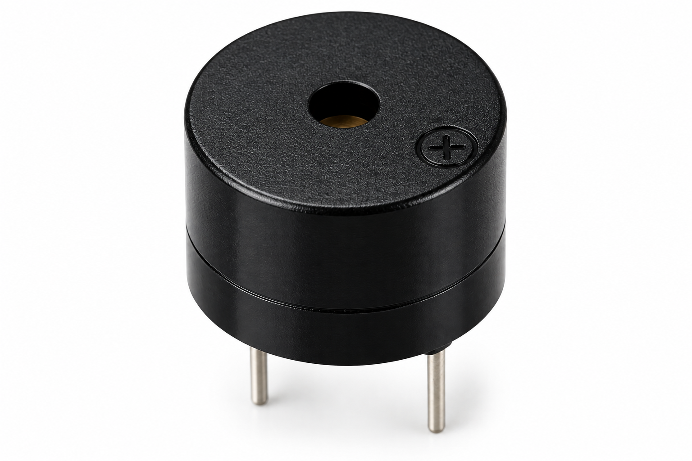
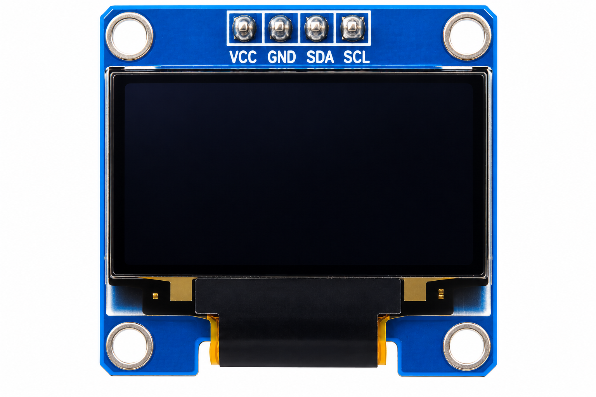

motor_vibration_monitor.py

DC Motor Vibration Monitoring System

To monitor DC motor vibration using an MPU6050 accelerometer and Raspberry Pi 4B, display the vibration value on an SSD1306 OLED, and activate a buzzer when the configured vibration threshold is exceeded.
The Raspberry Pi controls a DC motor through an L298N motor driver and reads acceleration on the X, Y and Z axes from an MPU6050. The program calculates acceleration magnitude and subtracts approximately 1 g of gravity to estimate vibration. An OLED displays the value and motor status. A transistor-driven buzzer indicates high vibration.

Reads sensors, controls the motor, and detects faults.

Measures three-axis acceleration for vibration monitoring.

Drives the DC motor from a suitable external supply.

Motor whose vibration is monitored.

Sounds when vibration exceeds the fault threshold.

Shows vibration readings and motor status.

Switches buzzer current safely.

Limits current to the transistor base.

Supports the buzzer driver circuit.

Connects the Raspberry Pi, sensor, driver, OLED and buzzer.
| Component / Signal | Physical Pin / Terminal | Raspberry Pi Connection |
|---|---|---|
| MPU6050 VCC | 3.3V | Physical pin 1 or 17 |
| MPU6050 GND | GND | Physical pin 6 or 9 |
| MPU6050 SDA | GPIO2 / SDA1 | Physical pin 3 |
| MPU6050 SCL | GPIO3 / SCL1 | Physical pin 5 |
| OLED SDA / SCL | GPIO2 / GPIO3 | Physical pins 3 / 5 (shared I²C) |
| OLED VCC / GND | 3.3V / GND | Verify module supply rating |
| L298N IN1 | GPIO17 | Physical pin 11 |
| L298N IN2 | GPIO27 | Physical pin 13 |
| L298N ENA | GPIO18 (PWM) | Physical pin 12 |
| L298N GND | Raspberry Pi GND | Common ground |
| L298N OUT1 / OUT2 | DC motor terminals | Motor connection |
| L298N motor supply | External suitable motor supply | Never power motor from GPIO |
| GPIO23 through 1kΩ | BC547 base | Physical pin 16 |
| BC547 emitter | GND | Common ground |
| BC547 collector | Buzzer negative | Transistor switching |
| Buzzer positive | Suitable buzzer supply | Match buzzer voltage/current |

The MPU6050 reports three-axis acceleration. The program calculates abs(sqrt(ax² + ay² + az²) - 1.0). When the value exceeds 1.30 g, the OLED shows a fault and GPIO23 activates the transistor-driven buzzer; otherwise the display shows normal status.
sudo raspi-config and reboot. Install Python dependencies RPi.GPIO, smbus2, adafruit-blinka, adafruit-circuitpython-ssd1306 and Pillow.sudo i2cdetect -y 1 to check for MPU6050 at 0x68 and OLED at 0x3C.motor_vibration_monitor.py and run python3 motor_vibration_monitor.py.Raspberry Pi Experiment · Code Review
Click an explanation tab to highlight its matching Python source block. Copy Code copies the complete motor_vibration_monitor.py program.
Select a tab to highlight the corresponding source section.
Motor PWM: GPIO18. Buzzer driver: GPIO23. Vibration threshold: 1.30 g. I²C addresses: MPU6050 0x68 and OLED 0x3C.
Motor connection: Use the L298N with a suitable motor supply and common ground. Remove the ENA jumper before applying GPIO18 PWM. Secure the sensor and calibrate the threshold.
The motor runs at 70% PWM duty cycle. The OLED shows the vibration value and either STATUS: NORMAL / Motor OK or STATUS: FAULT / HIGH VIBRATION!. The buzzer sounds above the 1.30 g threshold. On exit, the motor and buzzer stop and GPIO resources are cleaned up.